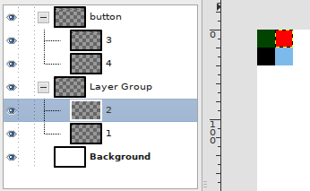

Game-1 :: Gimp'ten YAML'a kaplama koordinatları en
Gimp'te hazırlanacak çoklu kaplama içeren resimlerden, oyuna, katmanlardaki bilgileri kullanarak kolayca kaplama aktarabilmek için ufak bir PythonFu yazdım.

Yukarıdaki katmanlardan görünür olanlarını bir PNG dosyasına kaydedip, yine görünür olanların koordinatlarını YAML olarak aşağıdaki şekilde yazıyor. Bunu ilk olarak YAML ve ChaiScript kullanacak olan arayüz kütüphanemde deneyeceğim. Daha sonra oyunun bütün kofigürasyonunu da yine bu ikisiyle yapmayı planlıyorum.
load: Untitled.png
textures:
- coords:
- [0, 20, 20, 20]
- [20, 20, 20, 20]
name: button
type: imagelist
- coords:
- [0, 0, 20, 20]
- [20, 0, 20, 20]
name: Layer Group
type: imagelist
- coords: [0, 0, 640, 400]
name: Background
type: image